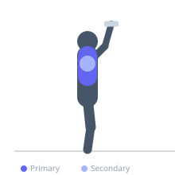

Exercise guide / Standing Dumbbell Svend Press
Standing Dumbbell Svend Press
The Svend Press (named after Norwegian strongman Svend Karlsen) involves holding a weight plate or two dumbbells pressed together at chest height and extending the arms straight forward, then returning them back to the chest. The constant inward squeezing force activates the medial pectoral fibers through continuous adduction, making it an effective isolation finisher for the inner chest.
Primary muscles
pectoralis major sternal
pectoralis major clavicular
Secondary muscles
deltoid anterior
pectoralis minor
Stabilizers
trapezius middle
trapezius lower
Equipment
Dumbbell (Fixed)
Optional
Weight Plates

Starting position
- Stand upright holding two dumbbells or a weight plate pressed firmly together at chest height with both palms facing each other.
Setup
- Use a light weight plate (5-10kg) or two light dumbbells. The load is deceptively light because constant adduction is tiring. Stand with feet shoulder-width apart.
Steps
- Step 1: Hold the weight pressed together at the chest with both hands, palms facing inward.
- Step 2: Squeeze hard and slowly extend the arms forward until fully stretched in front of the chest.
- Step 3: Maintain the squeeze and slowly return the weight back to the chest.
- Step 4: Repeat without releasing the squeeze.
Coaching cues
- Squeeze as hard as you can throughout the entire rep
- Think 'keep the plate from falling' by pressing inward the entire time
Breathing
- Exhale as arms extend forward. Inhale as they return to the chest.
Range of motion
- Arms extend fully forward to shoulder height; return to light chest contact.
Tempo
- 2-1-2-0
Common mistakes
- Using too heavy a weight, breaking the squeeze
- Allowing the elbows to bend rather than pressing straight forward
Safety
- Very light loads are appropriate — this is a finishing exercise, not a primary mover
- Avoid if shoulder impingement is present
Training
- hypertrophy: 12–20 reps
- hypertrophy: 2–4 sets
- Rest: {'hypertrophy': 60}